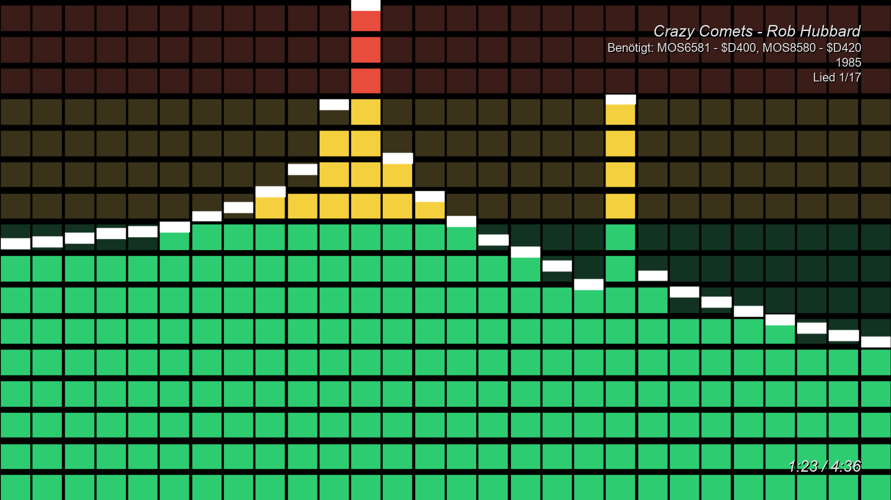

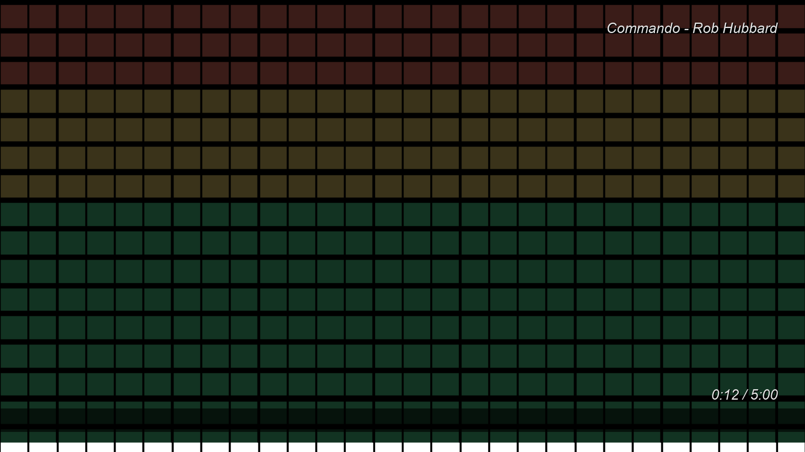
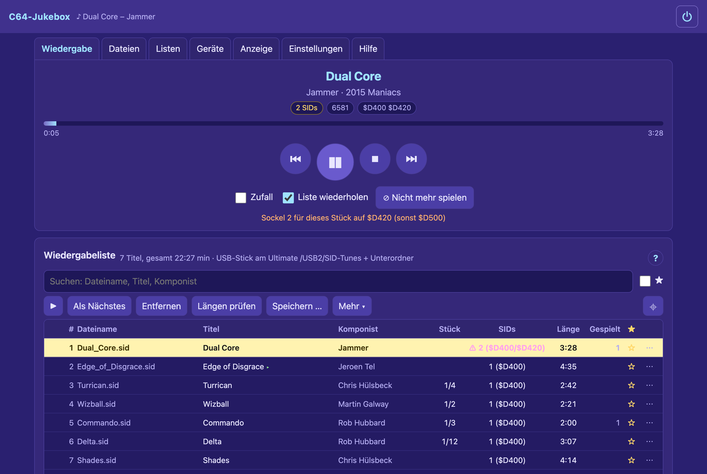
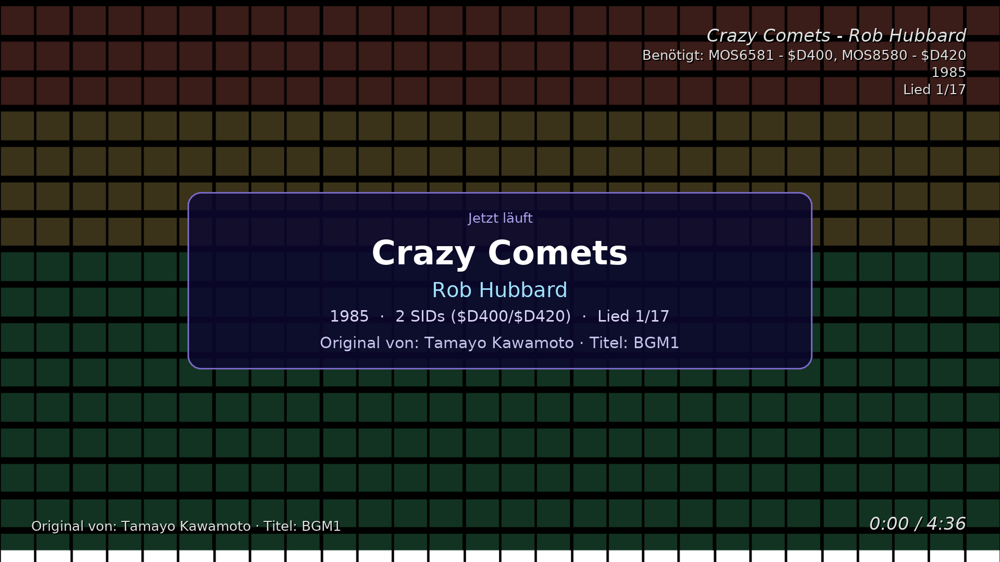
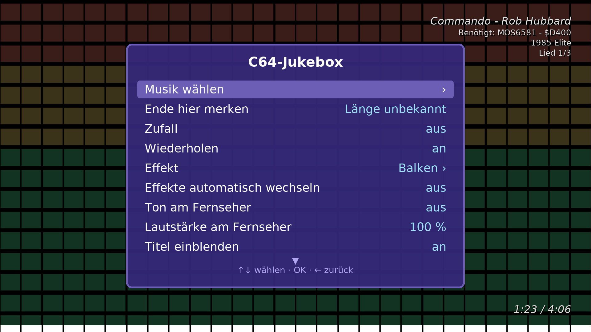
This guide shows how to operate the jukebox. Installation, hardware and all
details are in its manual (German) – in the web page under the tab Hilfe (every round ? button jumps to
the right place) and as docs/HANDBUCH.md. The web page and the TV menu are in German; buttons and
menu items are quoted here as they appear, in italics with a translation. The pictures show
sample data.
| With | What you can do | Requirement |
|---|---|---|
| Web page phone, tablet, PC |
Everything: choose and play music, lists, settings, TV, Ultimates, Picos. | browser in the same network, address http://c64pi.local/ |
| The TV's remote control | Play, stop, change tune and sub-tune, change the style – and through the menu on the TV choose music, shuffle, lengths, choose the Ultimate, switch it on/off. | Pi on an HDMI input, HDMI-CEC switched on at the TV |
| Touch display on the Pi 2.8″, optional |
Shows tune, levels and network; buttons ⏮ ■ ⏭. | display connected |
commodore64 – a yellow bar reminds you to change it
under Einstellungen → Web-Passwort).The jukebox keeps playing on its own, even when no page is open. All open pages show the same state – start on the phone and carry on at the PC.
At the very top is always the current tune. Below are the tabs – on the phone partly as symbols:
| Tab | Phone | Content |
|---|---|---|
| Wiedergabe (playback) | ▶ | current tune, buttons, sub-tune, shuffle, playlist |
| Dateien (files) | Dateien | sources (NAS, FTP, USB sticks), folders, filter, search, play |
| Listen (lists) | Listen | saved playlists, ready-made compilations, “recently played”, statistics |
| Geräte (devices) | Geräte | Ultimates (which one plays, on/off), Picos and stream distributor, devices in the network |
| Anzeige (display) | 📺 | TV (styles, background, sound, retro news, remote control) and the Pi's display |
| Einstellungen (settings) | ⚙ | playback, timer, song lengths, the Pi's network, password, backup |
| Hilfe (help) | ? | the manual |
Short messages (“Gespeichert” – saved, “Commando – spielt” – playing) appear at the bottom for a few seconds. The round ? buttons on the cards open the manual at the right place.
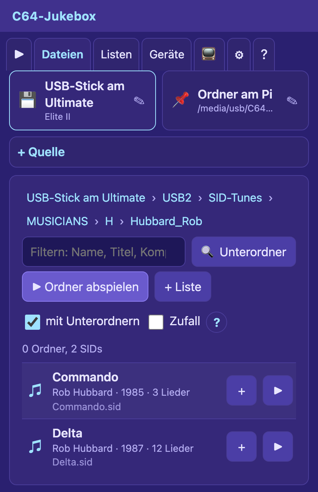
hubbard 1986).C64Music/DOCUMENTS tap als
HVSC-Längen laden (load as HVSC lengths) at Songlengths.md5 and als STIL
laden at STIL.txt. The jukebox then changes exactly at the end of a tune and shows background
notes on the tunes.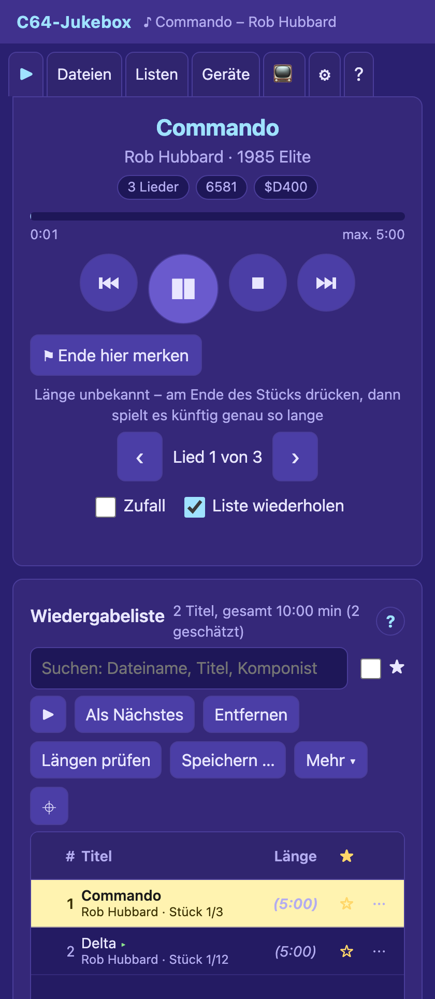
| Button | Effect |
|---|---|
| ⏮ | to the start of the tune; within the first 5 s to the previous tune |
| ▶ / ❚❚ | play or pause (the Ultimate is paused) and resume |
| ⏹ | stop – the Ultimate is reset |
| ⏭ | next tune |
| ‹ Lied 1 von 3 › | another sub-tune of the current tune |
| Zufall | shuffle; tunes played less often come up sooner |
| Liste wiederholen | repeat the list, otherwise the jukebox stops at its end |
| Ultimate | with several Ultimates: which one plays |
3:05 from the HVSC, 3:05* own, (5:00) grey =
unknown (the time limit applies). Längen prüfen (check lengths) looks for missing
lengths in the HVSC.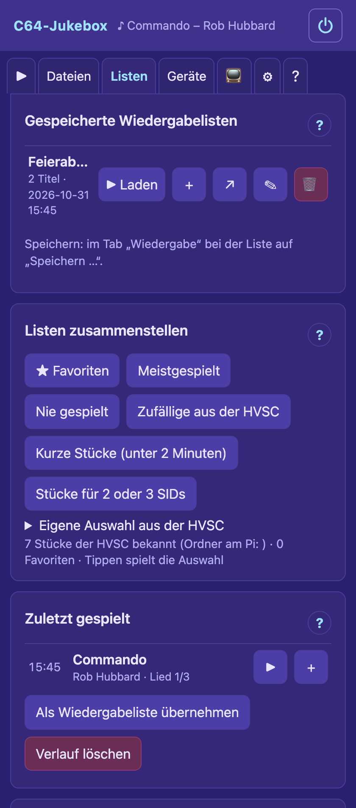
▶ Laden (load) replaces the current list and plays it, + appends it, ↗ exports it for the PC jukebox, ✎ renames, 🗑 deletes. Lists are saved in the tab ▶ with Speichern ….
One tap plays at once: ★ Favoriten (favourites), Meistgespielt (most played), Nie gespielt (never played), Zufällige aus der HVSC (random from the HVSC), Kurze Stücke (short tunes), Stücke für 2 oder 3 SIDs (tunes for 2 or 3 SIDs). Under Eigene Auswahl aus der HVSC (own selection) you can choose by area (musicians, games, demos), composer, length, number of SIDs, STIL notes and “never played”. This needs the HVSC song lengths loaded from a source.
The last 100 tunes with the time, newest first. ▶ plays one next, + appends it, Als Wiedergabeliste übernehmen turns the history into a new list, Verlauf löschen clears it.
How often what was played – counts and favourites belong to the file, also in other lists.
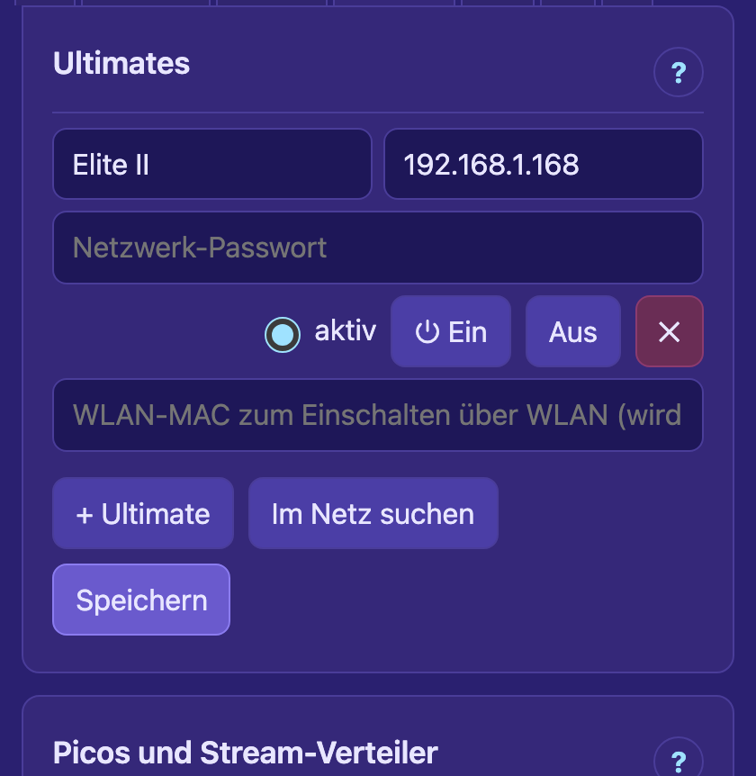
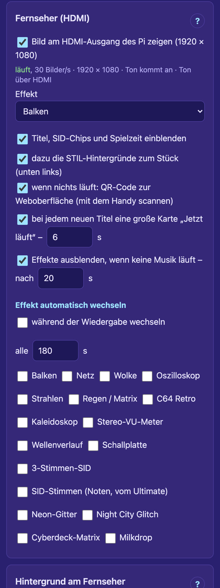
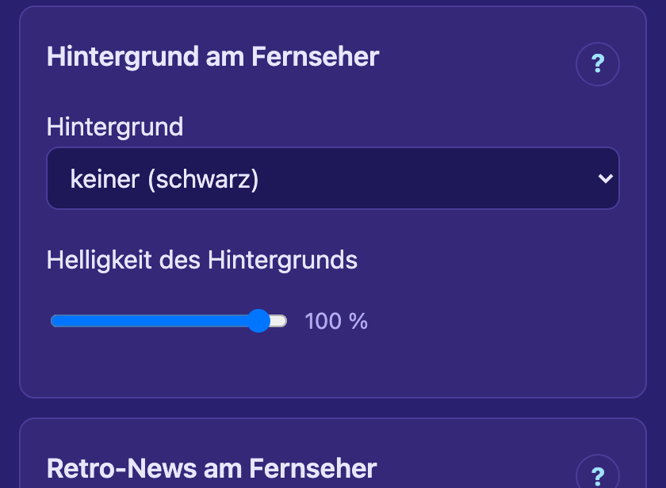
Background: none, pictures (slide show: upload them or choose a folder of a source, e.g. on the NAS; change every 20 s with cross-fade) or the C64's picture live from the Ultimate. “Brightness of the background” dims it.
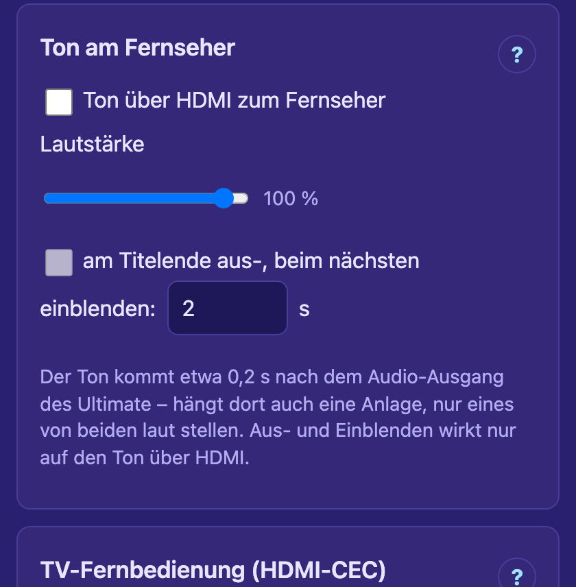
Ton über HDMI zum Fernseher plays the Ultimate's sound through the TV. Volume (0–100 %) makes it quieter without looking for the remote. With am Titelende aus-, beim nächsten einblenden the tunes fade into each other (only on the TV; the Ultimate itself plays unchanged). If a stereo is connected to the Ultimate as well, turn up only one of them – the TV is about 0.2 s later.
Headlines from retro pages (Indie Retro News, amiga-news.de, Commodore News …): in idle mode as a big card, as a ticker at the bottom during the music. Every source can be switched on and off, own feeds with + Quelle.
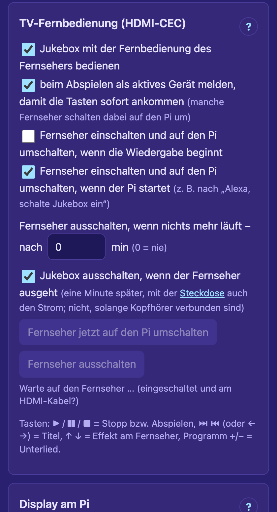
Type of display (small OLED or 2.8″ with touch), set up touch, rotate the picture, after how many minutes it goes dark – see section 11.
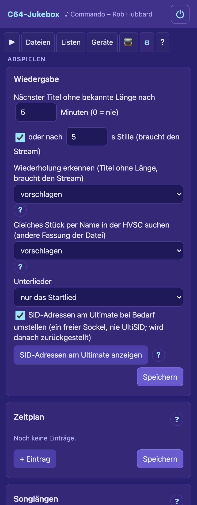
| Setting | Effect |
|---|---|
| Next tune without a known length after … minutes | time limit (default 5, 0 = never) |
| or after … s of silence | moves on when a tune ends and goes silent (needs the stream) |
| Detect repeats | suggests a length when a tune starts over – suggest, automatic or off |
| Find the same tune by name in the HVSC | take the length of another version of the same music |
| Sub-tunes | only the start tune or all one after the other |
| Switch SID addresses when needed | sets a free SID socket of the Ultimate to the address a stereo tune needs, and back afterwards |
On the HDMI output the Pi shows styles to the music at 1920 × 1080 – over black, a slide show or the C64's live picture. Top right are title, composer, the SID chips needed, year and sub-tune, bottom right the playing time. For every new tune the “now playing” card appears for a moment.


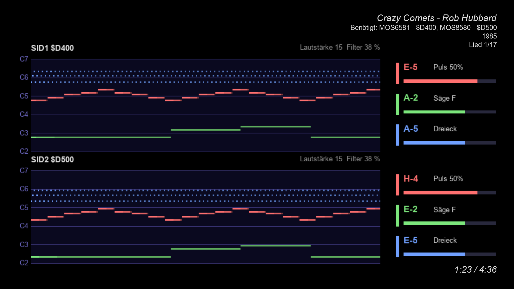
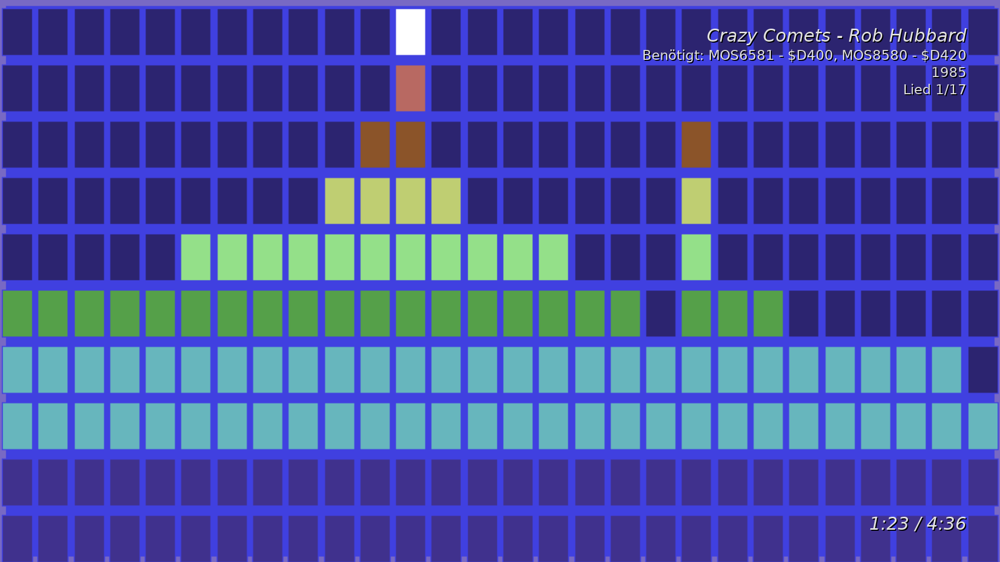
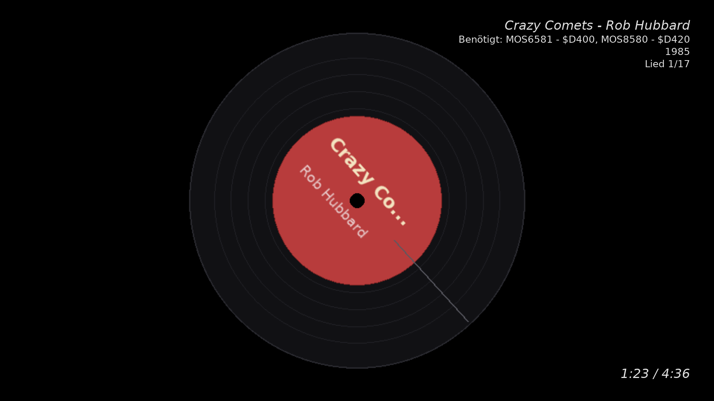
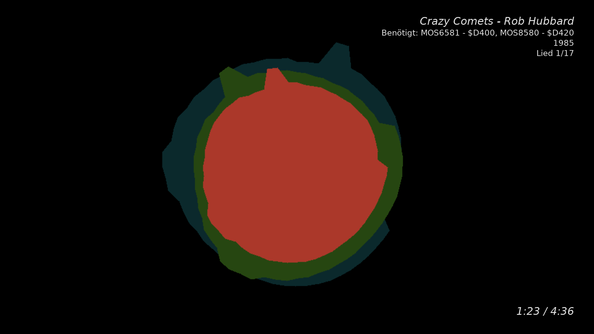
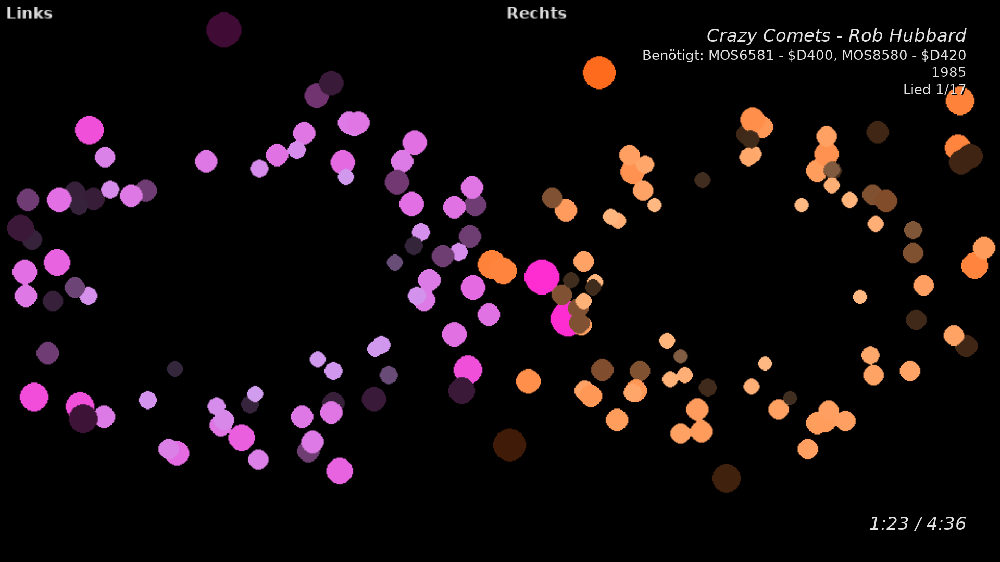
Switch on: tab 📺, card TV-Fernbedienung (HDMI-CEC), tick Jukebox mit der Fernbedienung des Fernsehers bedienen. CEC must be on at the TV (called e.g. Anynet+, SimpLink, Bravia Sync, VIERA Link). Most TVs send the keys only to the device they are showing – so switch to the Pi's input (or use Fernseher jetzt auf den Pi umschalten in the card).
| Key | Effect |
|---|---|
| ▶ ❚❚ | stop while music plays – play when stopped |
| ■ | stop |
| ⏭ ⏮ · ⏩ ⏪ · → ← | next / previous tune |
| ↑ ↓ | next / previous style on the TV |
| Channel + − | next / previous sub-tune |
| OK or a menu key | opens the menu on the TV |
In the menu: ↑ ↓ choose, OK or → run or open, Back or ← one level back (at the top: close). After 30 s without a key it closes by itself. ▶, ■, ⏭ and ⏮ also work with the menu open.
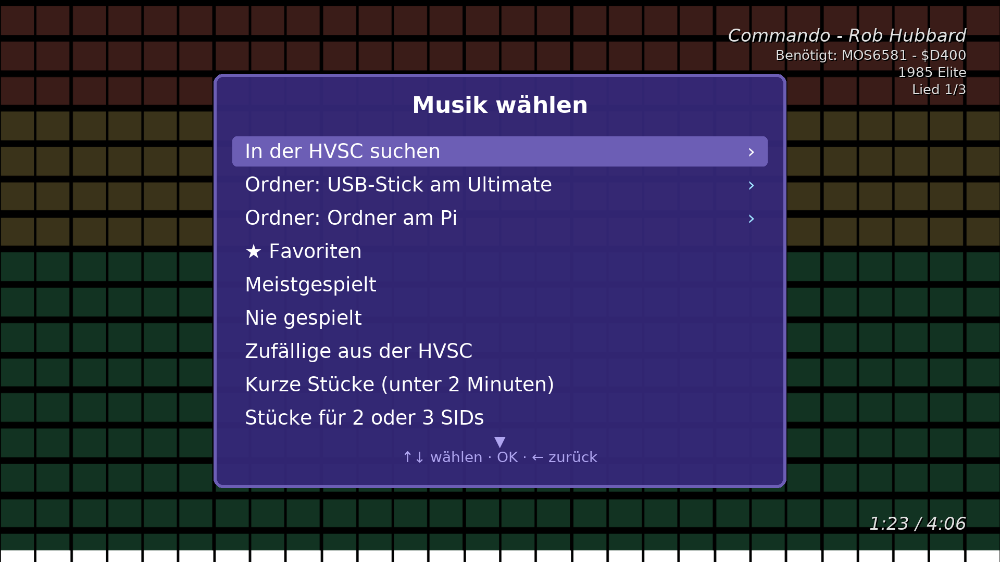
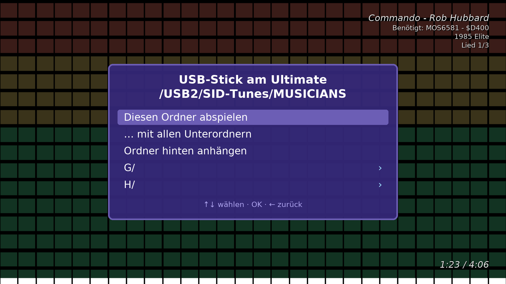
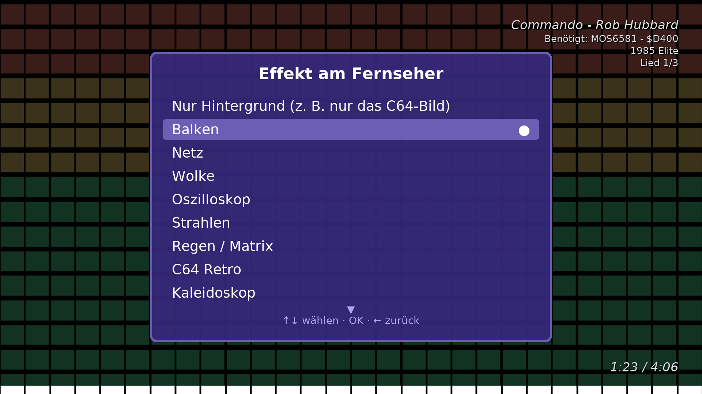
| Menu item | What it does |
|---|---|
| Musik wählen (choose music) | sources (“Ordner: …”) to browse – Diesen Ordner abspielen (play this folder), … mit allen Unterordnern (with all subfolders), Ordner hinten anhängen (append folder), a file plays the folder from there –, the compilations (favourites, most played, never played, random from the HVSC, short tunes, tunes for 2 or 3 SIDs) and all saved lists (play, append, rename, delete) |
| Ende hier merken / Erkannte Länge übernehmen / HVSC-Länge übernehmen | only for a tune without a known length: the playing time or the length found becomes its length |
| Zufall, Wiederholen | shuffle, repeat on/off |
| Effekt, Effekte automatisch wechseln | choose the style, automatic change on/off |
| Ton am Fernseher, Lautstärke am Fernseher | sound over HDMI on/off; every OK one step quieter (100 → 90 … 10 → 100) |
| Titel einblenden | the details top right on/off |
| Längen prüfen | looks for missing lengths in the HVSC; then “… HVSC-Längen übernehmen” (accept) |
| Ultimate | which one plays (● = active), Im Netzwerk suchen (search), add new ones with “+ name” |
| Ultimate einschalten / ausschalten | wake it over its WLAN or switch it off (asks first) |
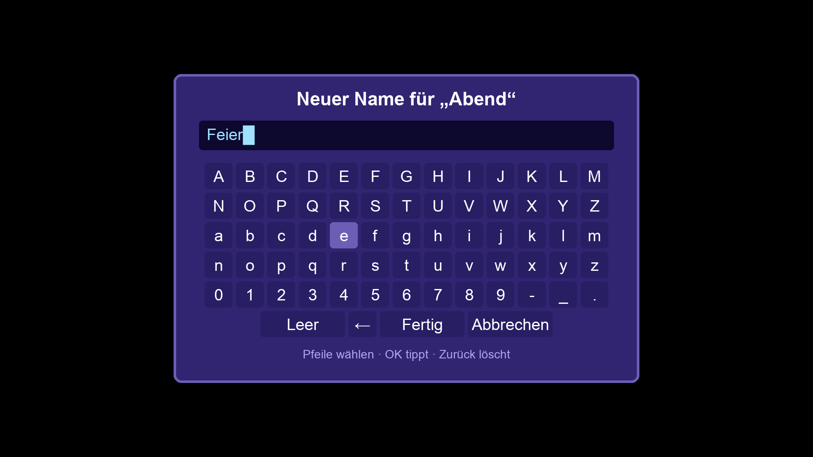
Notes appear discreetly above the playing time, e.g. “Fängt nach 1:35 von vorn an · OK: als Länge übernehmen” (starts over after 1:35 · OK: take as length) – OK then opens the menu at the right item, a second OK accepts.
In the card TV-Fernbedienung you can also set the TV to switch on and change to the Pi when the music starts, and to switch off when nothing has played for a while.
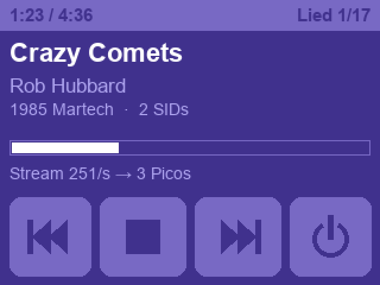
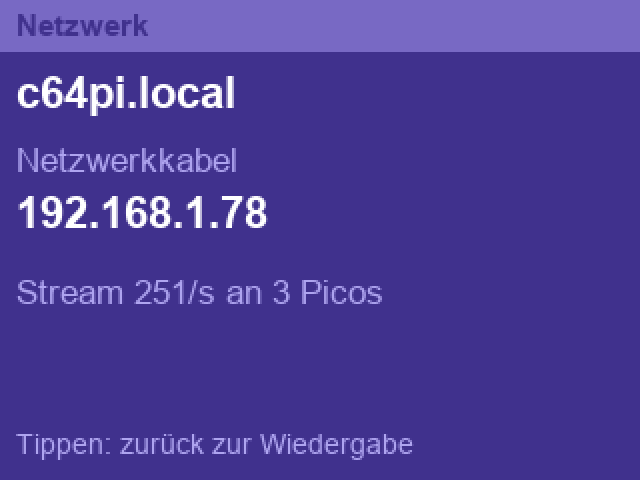
| What you see | What helps |
|---|---|
c64pi.local does not work | Use the IP address: QR code on the TV or the Pi's display, otherwise in the router's list. |
| The remote does nothing | Switch the TV to the Pi's input (or “Fernseher jetzt auf den Pi umschalten”); switch CEC on at the TV; check the tick in the card “TV-Fernbedienung”. |
| No sound on the TV, styles do not move | The sound comes as a stream from the Ultimate: is the Ultimate on and entered with its Ethernet address? Are Data Streams allowed in the Ultimate? |
| Tunes always run 5 minutes | Length unknown: load the HVSC song lengths (tab Dateien), press “Ende hier merken” at the end or accept the suggestions. |
| A voice is missing in a stereo tune | Switch on “switch SID addresses when needed”; ⚠ in the column “SIDs” marks tunes that do not match the Ultimate's setting. |
| SID voices: a note instead of notes | Switch on “Debug Stream Mode” at the Ultimate; not together with the background “C64 picture”. |
| Password forgotten | see the manual, chapter “Passwort vergessen” (reset over SSH). |
C64 Jukebox · Copyright © 2026 Sedor (der-sedor.de) · free software under the GNU General Public License, version 3. “Commodore”, “C64”, “SID” and “Ultimate 64” / “C64 Ultimate” are trademarks of their respective owners; this project is not affiliated with them.